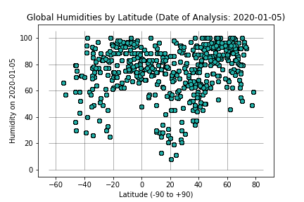

Humidity as a Function of Latitude

The scatterplot shows little relationship between latitude and humidity, though it warrants further analysis before we can arrive at
a definitive conclusion. On the one hand, the vast majority of surveyed locations at all latitudes show humidity levels well above 50%;
that is, most locations are fundamentally wet. However, there are two “sub-trends” worthy of mention. Readers will notice two significant
downward “spikes” in the humidity level, one centered around 30o south and the other around 20o north.
This suggests some relationship may exist.
Further analysis contributes the observation that these latitude lines pass over several of the world’s major desert regions.
Specifically, the 20oN latitude line crosses both the Sahara Desert and the Arabian Peninsula while 30oS crosses both the Kalahari Desert
and the Australian Outback. It is likely that the lower levels of humidity are representative of locations within these zones. The specific
question that warrants further study, then, is whether these significant areas of desert are themselves a function of latitude or are a mere
geographic coincidence.